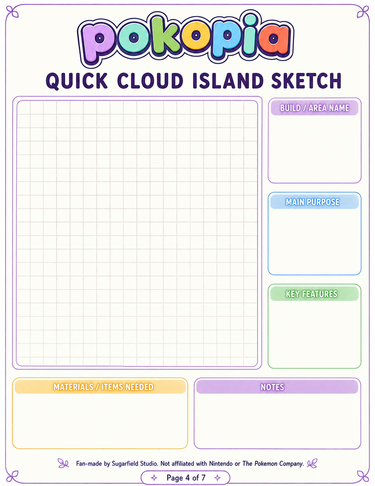

PROPOSED DESIGN — NOT DEPLOYED · WHY USEFUL

FOR YOUR NEXT SESSION
A LIGHTWEIGHT GUIDE FOR THE MOMENTS YOU WANT A LITTLE DIRECTION.
- Set a goal before you begin.
- Keep daily priorities visible.
- Capture a cloud-island sketch.
- Make a home for rare-finds notes.